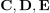
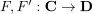
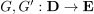
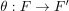
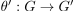
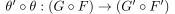

horizontale Komposition von natürlichen Transformationen
1. Definition
Seien  Kategorien mit den Funktoren  und  und den natürliche Transformationen  und . Durch Komposition erhält man den Funktoren $ und die natürliche Transformation , die kommutiert